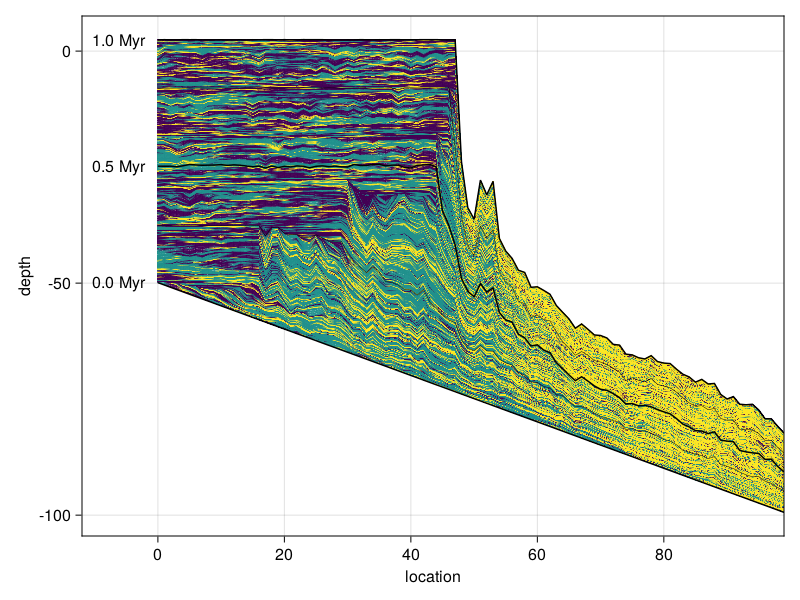

CarboKitten.jl: Modeling Carbonate Platforms in Julia
About
CarboKitten is a clone of Peter Burgess' CarboCAT, a model for growing carbonate platforms.

Julia Quickstarter
This code is written in Julia. You may want to check out the following references:
There are several ways to work with Julia that may be a bit different from what you're used to, if that is Matlab, Python or R.
Installing Julia
The best way to install Julia is to use juliaup at github.com/JuliaLang/juliaup.
REPL
The most basic way to work in Julia, is to start the REPL (Read Eval Print Loop).
$ julia
_
_ _ _(_)_ | Documentation: https://docs.julialang.org
(_) | (_) (_) |
_ _ _| |_ __ _ | Type "?" for help, "]?" for Pkg help.
| | | | | | |/ _` | |
| | |_| | | | (_| | | Version 1.9.3 (2023-08-24)
_/ |\__'_|_|_|\__'_| | Official https://julialang.org/ release
|__/ |
julia> From here you may use CarboKitten using CarboKitten and run any of the code inside. To work with CarboKitten efficiently, you may want to load Revise. Revise auto-detects changes to loaded code and makes it easy to rerun.
Additionally you should learn how to work with Julia packages. If you want to experiment with things, try to create a new environment in an empty folder and add CarboKitten as a dev dependency:
pkg> dev <path to CarboKitten>VS Code
VSCode has very good support for working with Julia. Install the official Julia plugin and you should be good to go. Explore options by pressing Ctrl+Shift+P and type Julia to see what you can do. For example: start a REPL, run current script etc.
Jupyter
You can run Julia code from Jupyter if you install the Julia kernel. Press ] in the REPL to get into Pkg-mode, the prompt will change
(CarboKitten) pkg>You may install the IJulia kernel with add IJulia.
Pluto
An alternative notebook interface is called Pluto.
- Pluto is reactive: changes to code cells automatically update downstream dependencies.
- Pluto notebooks are written to regular Julia files and can be run independent from Pluto.
- The user interface of Pluto is slightly less mature than Jupyter
In Pkg-mode say add Pluto.
julia> using Pluto
julia> Pluto.run()
[ Info: Loading...
┌ Info:
└ Opening http://localhost:1234/?secret=xyzxyzzy in your default browser... ~ have fun!
┌ Info:
│ Press Ctrl+C in this terminal to stop Pluto
└ Plotting
The most used library to do plotting in Julia is called Plots. However, this library comes with a fair share of problems: there are a number of back-ends for which the generated plots may look slightly different. Here "back-end" means some plotting library written in a different language than Julia.
A nicer plotting library that also happens to be a bit more versatile is Makie. This has three back-ends that are CairoMakie, GLMakie and WGLMakie. These are all written in Julia, but they focus on different kinds of results. CairoMakie is usually slow but results in publication quality vector graphics: SVG or PDF. GLMakie is very fast, renders on your graphics card, but only produces raster images, say PNG. Then WGLMakie does a similar thing, but through the web-browser.
Entangled
If you plan to make a contribution to the core of CarboKitten, you should be aware of Entangled.
The documentation for CarboKitten is using Entangled for Literate Programming. This means that code blocks in the documentation contribute to the actual functioning code in the library. When you develop the library code, you should have the Entangled daemon running to keep the documentation synchronized. Included in the CarboKitten repository is a pyproject.toml that manages the Entangled installation for you through Poetry; alternatively, you may install Entangled through pip install entangled-cli.
To install, run poetry install in the project root, then:
poetry run entangled watchEntangled is still under development and it may occur that the daemon complains about not knowing wether to tangle or stitch, for example when you've accidentally written both markdown and source code. If this happens you may manually entangled tangle or entangled stitch with the --force argument to decide the issue. It may be worth saving your work in version control before doing so.
Building Documentation
To recreate the plots in the documentation run
poetry run brei figuresThe documentation can be rendered with Documenter.jl.
julia --workenv=docs docs/make.jlProject structure
.
├── data # data files
├── docs # documentation
│ ├── make.jl # docs build script
│ ├── Manifest.toml #
│ ├── Project.toml # dependencies for building docs
│ └── src # markdown source for docs
├── entangled.toml # entangled config
├── examples # example scripts
├── Makefile # command-line short hands
├── Manifest.toml #
├── Project.toml # project dependencies
├── pyproject.toml # dependencies for running Entangled
├── README.md #
├── src # tangled library source
└── test # unit testsThe figures from the documentation in "docs/src/fig" are git tracked, but are often regenerated when you change some of their direct dependencies. This makes switching branches harder, it would require issuing "git stash" first. We have now made sure that the regenerated figures appear in "docs/src/_fig" and are not git tracked. There is a task in pyproject.toml that takes care of copying from "docs/src/_fig" to "docs/src/fig" when this repo is cloned.
Authors
Lead engineer: Johan Hidding Netherlands eScience Center email: j.hidding [at] esciencecenter.nl Web page: www.esciencecenter.nl/team/johan-hidding-msc/ ORCID: 0000-0002-7550-1796
Original author: Peter Burgess University of Liverpool Web page: www.liverpool.ac.uk/environmental-sciences/staff/peter-burgess
Project lead: Emilia Jarochowska Utrecht University email: e.b.jarochowska [at] uu.nl Web page: www.uu.nl/staff/EBJarochowska ORCID: 0000-0001-8937-9405
Other team members:
Niklas Hohmann Utrecht University email: n.h.hohmann [at] uu.nl Web page: www.uu.nl/staff/NHohmann ORCID: 0000-0003-1559-1838
Xianyi Liu Utrecht University email: x.liu6 [at] uu.nl Web page: www.uu.nl/staff/XLiu6 ORCID:
Hanno Spreeuw Netherlands eScience Center email: h.spreeuw [at] esciencecenter.nl Web page: www.esciencecenter.nl/team/dr-hanno-spreeuw/ ORCID: 0000-0002-5057-0322
David De Vleeschouwer Westfälische Wilhelms-Universität Münster Web page: www.uni-muenster.de/GeoPalaeontologie/erdsystemforschung/staff/DeVleeschouwer ORCID: 0000-0002-3323-807X
Copyright
Copyright 2023 Netherlands eScience Center and Utrecht University
License
Apache 2.0 License, see LICENSE file for license text.
Funding information
Funded by the European Union (ERC, MindTheGap, StG project no 101041077). Views and opinions expressed are however those of the author(s) only and do not necessarily reflect those of the European Union or the European Research Council. Neither the European Union nor the granting authority can be held responsible for them.